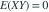
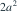
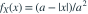

随机点 在菱形 （）内均匀分布。下面的结论哪项正确？
- AX、Y 均在 上均匀分布且独立
- B，但 X 与 Y 不独立
- C，所以 X 与 Y 独立
- D，且 X 与 Y 不独立
我已思考，展开答案与解析
正确答案：B
- 由对称性 ，且被积函数 xy 关于 x 是奇函数，故

。 - 菱形面积为

，固定 x 后的竖向长度为 ，所以
（），不是均匀密度。 - 例如 和 各自有正概率，但二者不可能同时发生，因此 X、Y 不独立。
易错提醒联合正态之外，不相关一般不能推出独立。
南审 813 · 2026 · 一·2(2)，PDF第1页
从大题拆分考点并重新编写选项；数值或设问有调整。
查看参考来源